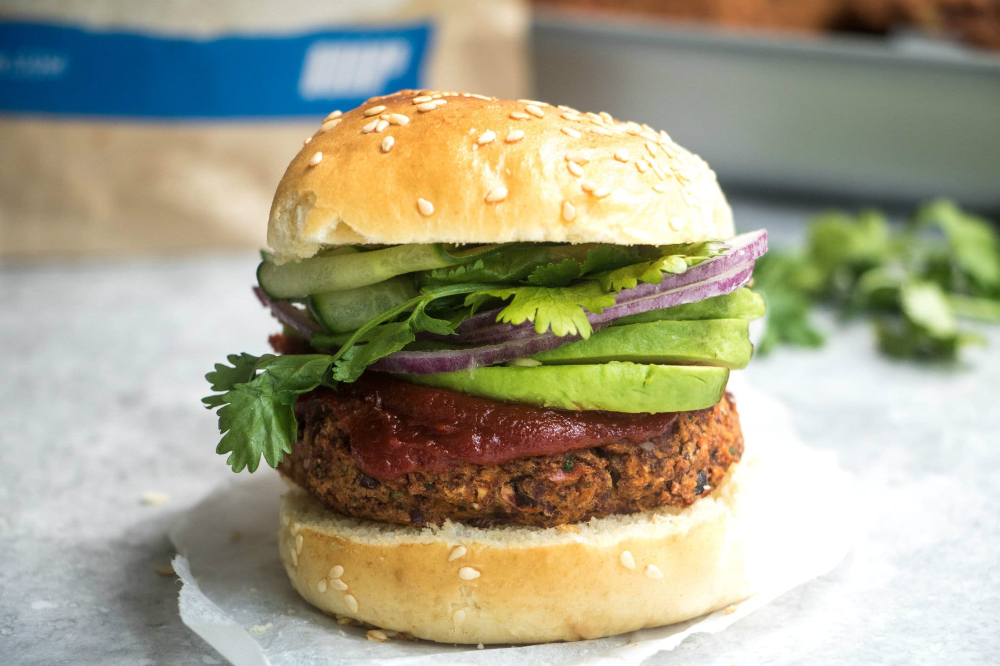

This low-cal lime and chilli turkey burgers are a game changer for your meal prep game.
Try these amazing lime and chilli flavoured turkey burgers for your next meal prep. They're low in calories and fat and rich in flavour!
Ingredients
- 1 tsp coconut oil
- 50g rolled oats
- 40g turkey mince (2-7% fat mince
- 1/2 tsp. sea salt and black pepper
- 1/2 red chilli
- 1 tsp. garlic paste (alternatively you can use 1 minced clove
- 1/2 small red onion
- 1/2 lime (juice and zest)
Creating the dish
- First, preheat oven to 180°C. Add the rolled oats to a food processor and process until finely blended.
- Add the onion, chilli, garlic and lime juice and zest and process until coarsely chopped. Next, add the burger mince, salt and pepper and pulse to combine.
- Make 5 burger patties with your hands and place onto a lined baking try.
- Bake for 15-20 minutes.
- Serve with vegetables of choice. Use lettuce wraps for a low-carb version.
Nutrional Facts (amount per serving)
| Calories |
147 |
| Total Fat |
5g |
| Total Carbohydrates |
10g |
| Sugar |
1g |
| Protein |
17g |